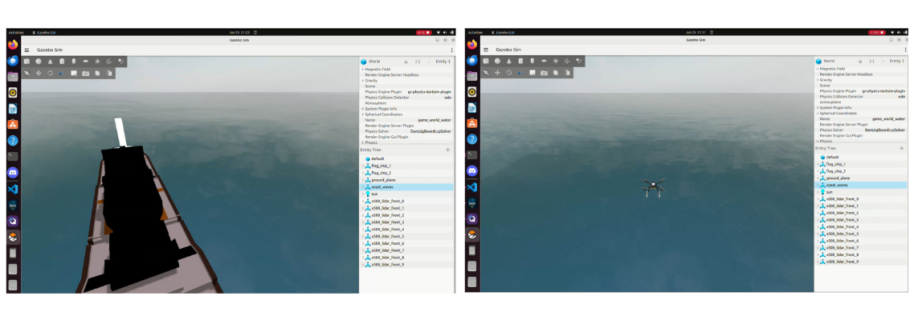
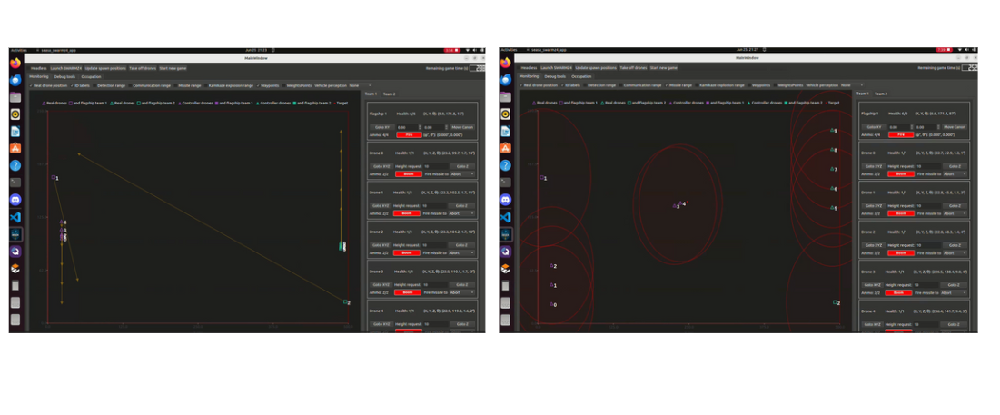
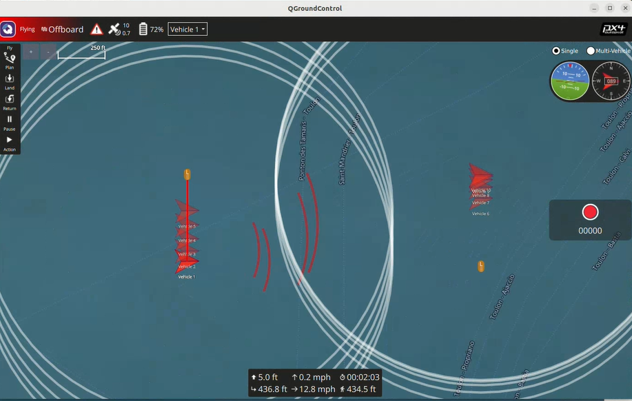

As part of a collaborative project with two colleagues, I worked on the SWARMz4 challenge, a simulation framework built in Gazebo for drone and carrier battle scenarios. The environment simulated two opposing teams, each tasked with defending their own carrier while coordinating drone attacks on the enemy. The core challenge was to integrate communication, detection, strategy, and autonomous decision-making into a realistic combat simulation.
The system was implemented in ROS2 and Gazebo Garden, with integration of PX4 Autopilot for flight control and QGroundControl for mission management. We worked with ROS2 topics, services, and actions to manage communication, detection, and attacks between robots.
My team and I first designed a Qt-based interface to visualize test results and improve the monitoring of drone states during simulation. This interface gave us a clearer overview of detection, communication, and missile launches, helping us refine our strategies.
Our strategy relied on autonomous drones using a reward-based system to decide between three actions: move, fire, or perform a kamikaze explosion. Each drone evaluated the context — enemy proximity, distance, ammo, and ally support — to select the most effective response. The flagship remained static in a corner for protection, acting purely as a defensive unit with long-range detection and missile fire. This hybrid approach balanced local autonomy with team-level defense to protect the flagship while neutralizing threats.
The simulation successfully demonstrated autonomous drone-carrier battles with integrated physics, detection, communication, and combat mechanics. This project highlighted my ability to work in a team, combine ROS2 simulation, GUI design, and strategic planning, and contribute to a complex multi-agent system.
← Back to Projects